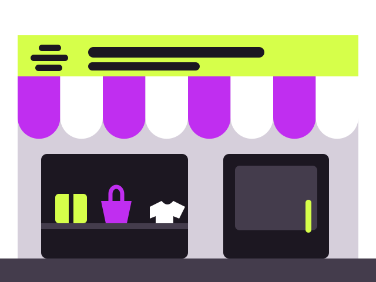

Aquela loja que você adora. Não Agora entrega.


Escolhana loja.
Pediu.
Sem sair do lugar.
Acompanhecada etapa.
Em breve.
Siga e ativeo sininho.
Começamos por Francisco Morato e região.

Sem sair do lugar.
Siga e ativeo sininho.
Começamos por Francisco Morato e região.